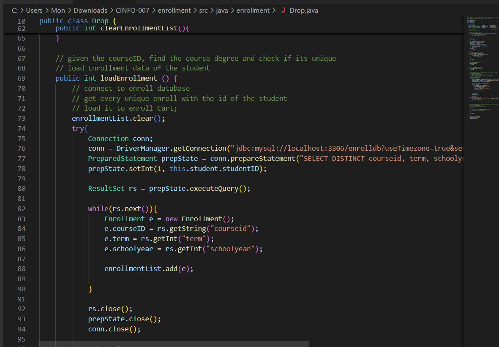

I'm Mon Jericho Sy, age 21, BS Computer Science Major in Network and Information Security graduate of DLSU, currently just vibing and enjoying life out there. I like trains, I like tearing things apart and analyzing how they tick, and I like learning about things in general.
what are your APQ and PCK results that you did during SAS1000 in 2021 and SAS2000 in 2022 in DLSU and what are your thoughts about that?
Here are my APQ and PCK results...
.. and here are my thoughts about this
I actually recognize that throughout my colllege years, my interests and hobbies haven't changed that much, as proven by how I still identify with my PCK results. What did change, in my opinion, is my approach in life, as indicated that it feels like I'm reading someone else's APQ results. I recognize that it was me in the past, but still reading about how "I am a shy person" is incredibly bizzarre. Overall, it really was a throwback to the past, and my God it does bring back so much memories of my entire college stay.
cool thoughts, cool thoughts, but what about your resume? you're not going into the workforce without one, are you?
sure, here's my resume:
so... what did you do in DLSU anyway? were you proud of any particular things in there? any achievements that you can call your own?
there's not much that I can call my "own", but here are the highlights:
My First College Year in DLSU
CCPROG3 Pokemon Go Clone
We had to create a Pokemon Go Clone under a limited time and applying the OOP principles that we have learned in CCPROG3. It was incredibly difficult implementing all of the features that was requested, but it resulted in an incredibly satisfying job that I would love to redo again given what I know.
CCINFOM Database Schema Management
In this assignment, I was forced to do two projects at once even though I had groupmates, turning what should have been an easy subject into a very intensive one. The first project was creating a database schema, the second project was implementing a database schema given details. Both of these projects was hard.

Jesus Christ this was hell to work on, considering my groupmates dropped out or checked out midway